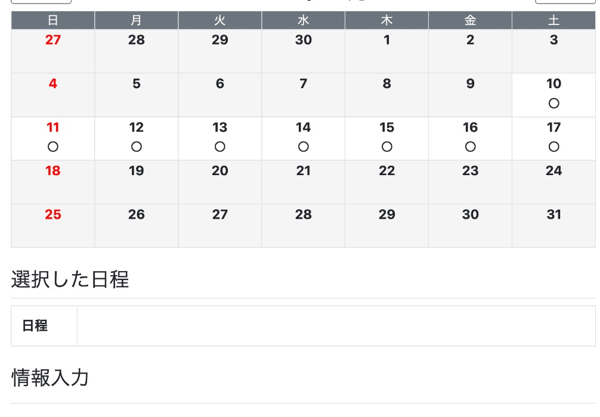

空いている時間に、勉強会の予約が自動で入ります
やることは1つだけです。
Googleカレンダーを、いつもどおり使うこと。
森川に日程を伝える必要は、もうありません。

しくみは4コマです
- お客さまが、日時を選んで申し込む
申込フォームに、担当者の名前は出ません。 - システムが、尾道さんのGoogleカレンダーを見る
その時間に予定がなければ「入れる」と判断します。 - 空いていれば、尾道さんが担当になる
尾道さんと森川の両方が空いているときは、尾道さんが優先です。尾道さんに予定があれば、森川に回ります。
朝9時の回は、尾道さんだけが担当です（森川は10時から）。 - 尾道さんのカレンダーに、予定とZoomリンクが入る
当日は、その予定を開いてZoomに入るだけです。

予約が入るのは、9:00〜22:00 の間です
1回60分。9:00から1時間ごとに、1日13回分
9:00／10:00／11:00 … 20:00／21:00 に始まります。毎日（土日・祝日も）。
お客さまが選べるのは、8日先までです。
申込の締め切りは、開始の12時間前です。
たとえば夜8時の回は、当日の朝8時まで予約が入ります。
それぞれの回に、カレンダーの予定が重なっているかどうかで決まります。
予定が少しでも重なった回は閉じます。
たとえば 10:30〜11:30 の予定があると、10:00の回と11:00の回の2つが閉じます。
いちばん大事なこと
カレンダーが空白の時間は、「入れます」という意味になります。
入れない時間は、予定を入れて閉じておいてください。
仕事の予定だけでなく、通院・送り迎え・休みたい時間も同じです。
入れない時間を閉じる（スマホで1分）
- 右下の ＋ を押して、予定 を選びます。
- タイトルに「勉強会不可」と入れます。
自分がわかる言葉なら何でも大丈夫です。お客さまには見えません。 - 開始と終了の時間を入れます。
例：夕方から入れない日は、17:00〜22:00。 - 右上の 保存 を押します。これで、その時間は閉じます。
画面のイメージです。実際の見た目は、機種やアプリの版で少し違います。
「終日」はオフのままにしてください
終日の予定は、空いている時間として扱われることがあります。
1日まるごと入れない日は、9:00〜22:00 のように時間を入れて閉じてください。
「予定あり」のままにしてください
予定の画面に「予定あり／予定なし」を選ぶところがあります。
「予定なし」にすると、その時間は空きとして扱われ、予約が入ります。
ふつうに作った予定は「予定あり」になっているので、変えなければ大丈夫です。
おすすめ：先に全部閉じて、入れる日だけ開ける
予定の入れ忘れが心配なら、この使い方が安心です。
入れ忘れても、予約が入ることはありません。
- 上と同じ手順で「勉強会不可」を作ります。時間は 9:00〜22:00。
- 繰り返し を 毎日 にして保存します。
これで、毎日ぜんぶ閉じた状態になります。 - 入れる日が決まったら、その日の「勉強会不可」を押します。
- 削除 →「この予定のみ」を選びます。
「すべての予定」を選ぶと、毎日の分が全部消えます。 - その日は、9:00〜22:00 がまるごと開きます。
午後だけ入れる日は、消さずに時間を 9:00〜13:00 に変えます。13:00 からの回が開きます。
予約が入ったら
- カレンダーに「〇〇さん：お金の増やし方オンライン勉強会」という予定が入ります。
- 予定を開くと、Zoomのリンクと、お客さまのお名前が入っています。
- 当日は、そのリンクからZoomに入ります。
個別相談の予約も、これからは同じカレンダー（尾道さんのメインのカレンダー）に入ります。
これまでの「クラファン個別相談」のカレンダーには入らなくなります。
困ったとき
予約が入ったあとで、行けなくなった
早めに森川へ連絡してください。
カレンダーの予定を消しても、お客さまの予約は取り消されません。
入れるはずの日に、予約が入らない
その時間に、ほかの予定が重なっていないか見てください。
9:00の回なら、9:00〜10:00 に少しでも重なると閉じます。
入れない日に、予約が入ってしまった
大丈夫です。森川へ連絡してください。
森川が代わるか、お客さまに日程の変更をお願いします。
カレンダーの中身は、森川やお客さまに見える？
見えるのは「予定がある時間」だけです。
予定のタイトルや内容は、森川にもお客さまにも見えません。
朝9:00より前や、夜22:00より後も受けたい
森川へ伝えてください。受付の時間を広げられます。
はじめる前の確認
- Googleカレンダーをスマホで開ける
- 入れない時間に、時間つきの予定を入れた（または「勉強会不可」を毎日で入れた）
- 「9:00〜22:00 の空白には予約が入る」と覚えた